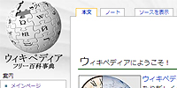

.coder : 簡単なtooltipをjQueryで作成
まずは完成形をご覧下さい。
簡単なtooltipですので、特にすごいエフェクトもございません。
エジプトのピラミッド、ハリカリナッソスのマウソレイオン霊廟、オリンピアのゼウス像、アレクサンドリアのファロス島の灯台、ロドス島のアポロンの巨像、エフェソスのアルテミス神殿、そしてバビロンの空中庭園。この七つの遺跡が「世界七不思議古典古代（古代ギリシャ・古代ローマ時代）における
7つの注目すべき建造物のことである。」である。しかし古代ギリシャ時代で前225年頃に書かれたとされるフィロンの七不思議には、ファロス島の灯台は書かれておらず、バビロンの城壁が七不思議の一つに数えられていた。その後様々な形で七不思議は伝承され、六世紀頃からファロス島の灯台が七不思議の一つになった。
tooltipを表示させる <a> に class="tooltip" を指定します。
その <a> 内に class="tooltipCont"を指定した要素を入れます。
<a class="tooltip" href="#">世界七不思議<span class="tooltipCont">古典古代（古代ギリシャ・...</span></a>
この段階ではまだ普通の <a> 要素です。
Javascriptとcssの設定で、 <a> 要素にホバーした際に<span> 要素を表示させるようにします。
大きく分けて <a> 要素にホバーした際に <span> 要素を表示させる設定と
<span> 要素がマウスにくっついてくる設定の2つです。
$(function(){
$(".tooltip").each(function(){
var content = $(".tooltipCont" , this);
$(this).mousemove(function(event){
$(content).css({
top : event.pageY + 15,
left : event.pageX + 15
});
});
$(this).hover(function(){
$(content).stop(true , true).fadeIn(300);
}, function(){
$(content).css("display" , "none");
});
});
}); Javascriptの設定で動作は完成しました。
cssでは表示される <span> 要素に装飾をします。
.tooltipCont {
display: none;
position: absolute;
z-index: 100;
padding: .5em;
background: #cef3ff;
-moz-border-radius: 5px;
-webkit-border-top: 5px;
font-size: 80%;
color: #000;
text-decoration: none;
}
※Javascriptで <span> 要素を非表示にしてもいいのですが、ページ読み込みの際に若干見えてしまいますので、cssで display: none; を指定しています。